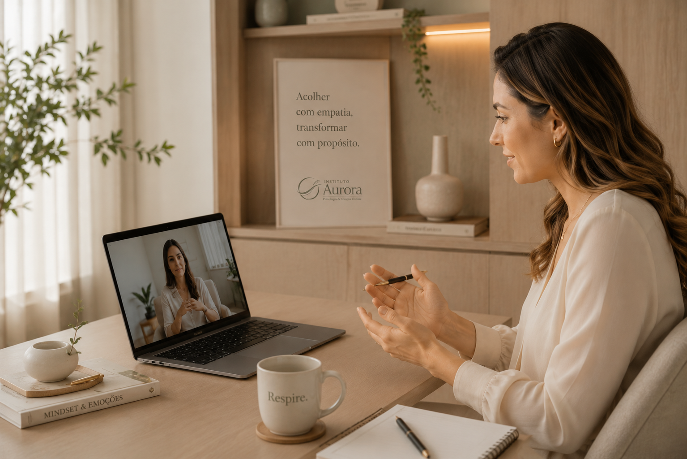
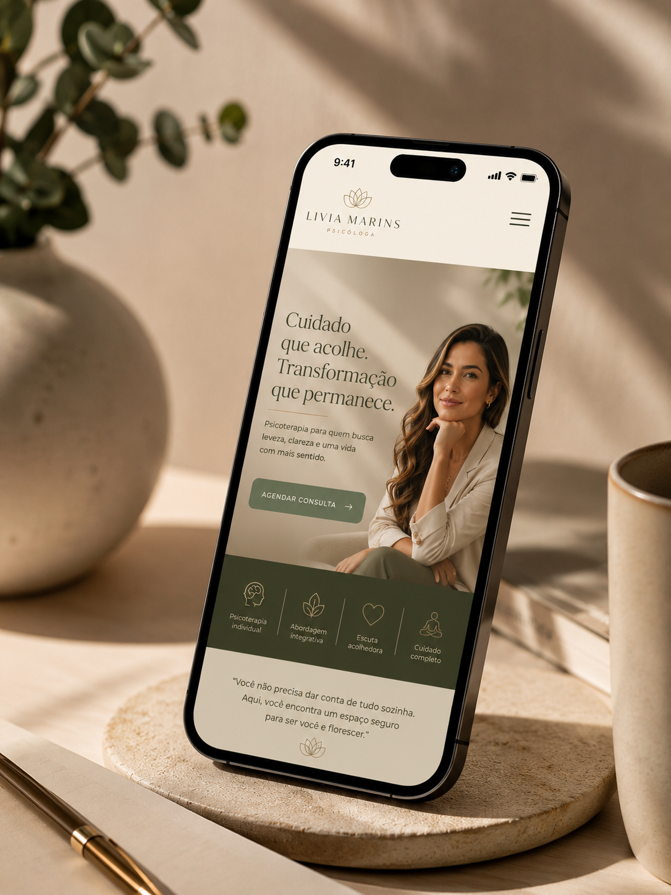

Psicologia online premium
Ansiedade
Exaustão
Autocobrança
Sigiloso
Privacidade e ética desde o primeiro contato
Online
Conforto, constância e acolhimento na sua rotina
Humano
Escuta profissional, sensível e sem julgamentos
Um espaço seguro para desacelerar por dentro e voltar a viver com clareza.
Psicoterapia online premium para adultos que sentem a ansiedade, a exaustão emocional ou a autocobrança ocupando espaço demais. Um acompanhamento acolhedor, sigiloso e profundo para reorganizar emoções, recuperar presença e construir uma rotina com mais leveza.
Primeira conversa acolhedora • Atendimento sigiloso • Orientação inicial pelo WhatsApp
Sigilo profissional
Atendimento online
Escuta humanizada

01
Clareza emocional
Um processo pensado para transformar excesso interno em consciência, calma e direção.
Especialidades
Cuidado emocional para fases reais da vida.
Cada atendimento é conduzido com ética, escuta ativa e uma abordagem sensível para transformar sobrecarga em clareza.
01
Ansiedade
Aprenda a reduzir pensamentos acelerados, recuperar sensação de segurança e atravessar a rotina com mais estabilidade.
02
Burnout
Reorganize limites, energia e presença quando o corpo e a mente começam a pedir pausa.
03
Pressão profissional
Ganhe clareza para lidar com decisões, cobranças e mudanças sem transformar a vida profissional em peso emocional.
04
Equilíbrio emocional
Desenvolva mais consciência para responder melhor aos conflitos, escolhas, mudanças e vínculos do dia a dia.
05
Presença e autocuidado
Crie pausas reais, presença emocional e uma relação mais cuidadosa com a própria história.
06
Relacionamentos
Entenda padrões de vínculo, comunicação e conflito para construir relações mais conscientes e seguras.
07
Autoestima
Fortaleça autoconfiança, identidade e segurança interna com profundidade, delicadeza e continuidade.
Essencial
Terapia para adultos
Um processo online para amadurecer emocionalmente, recuperar leveza e construir uma forma mais consciente de viver.
Sobre o instituto
Um instituto criado para transformar acolhimento em experiência, clareza e continuidade emocional.
A Aurora nasce da ideia de que o cuidado psicológico também pode ser vivido em um ambiente digital bonito, calmo, organizado e emocionalmente seguro.
Cada detalhe da página, do primeiro contato ao agendamento, foi pensado para reduzir ruídos, transmitir confiança e ajudar você a dar o próximo passo com mais tranquilidade.
Atendimento ético, sigiloso e humanizado.
Experiência online leve, organizada e segura.
Comunicação clara antes, durante e após o atendimento.
Terapia online
01
02
03
Um processo online claro, acolhedor e conduzido no seu ritmo.
As sessões acontecem em ambiente digital reservado, com orientação inicial, privacidade e continuidade para que você possa construir confiança ao longo do processo.
Primeiro contato
Você envia uma mensagem pelo WhatsApp e recebe uma orientação inicial simples, clara e acolhedora.
Organização da sessão
Horário, formato, privacidade e próximos passos são combinados com clareza e cuidado.
Processo terapêutico
O acompanhamento segue com escuta qualificada, ritmo seguro e objetivos emocionais conectados à sua realidade.


Benefícios
Benefícios que aparecem na forma como você atravessa a rotina.
Mais segurança para falar
Um espaço reservado para nomear o que pesa, sem pressa, exposição ou julgamento.
Mais constância no cuidado
Sessões online que se adaptam à rotina sem perder presença, vínculo e profundidade.
Mais clareza emocional
Um acompanhamento para compreender padrões, aliviar sobrecargas e tomar decisões com mais consciência.
Depoimentos
Relatos discretos de quem encontrou um espaço para respirar.
“Pela primeira vez em muito tempo senti que podia desacelerar sem medo de ser julgada.”
Marina L. Atendimento online“O acolhimento começou antes mesmo da primeira sessão. Tudo transmitia calma, organização e segurança.”
Renata C. Processo terapêutico“A terapia me ajudou a reorganizar pensamentos, reduzir a autocobrança e voltar a respirar com mais leveza.”
Helena M. Saúde emocional
FAQ
Perguntas frequentes.
Respostas simples para começar o processo com mais segurança, clareza e tranquilidade.
As sessões acontecem por videochamada em ambiente reservado, com orientação para que você esteja em um local seguro, confortável e com privacidade.
O primeiro contato pode ser feito pelo WhatsApp. Depois disso, você recebe orientações sobre horários, formato do atendimento e próximos passos.
Não. A terapia é um espaço de construção. Você pode começar pelo que está sentindo, vivendo, evitando ou tentando compreender.
O atendimento segue princípios éticos de confidencialidade. A sessão acontece em ambiente digital reservado, e você também recebe orientação para preservar sua privacidade.
A frequência é combinada de forma personalizada, considerando sua rotina, seus objetivos emocionais e a continuidade mais adequada para o processo.
Alguns convênios oferecem reembolso mediante recibo. As orientações podem ser esclarecidas no primeiro contato, conforme as regras do seu plano.
Comece com leveza
Talvez a sua mente não precise de mais cobrança. Talvez precise apenas de um espaço seguro para respirar.
Uma primeira conversa pode ser o início de um processo mais calmo, seguro e consciente. Fale pelo WhatsApp, tire suas dúvidas e receba orientação para começar com leveza.
Quero agendar pelo WhatsApp
Contato
Comece pelo primeiro passo: uma conversa acolhedora.
Fale pelo WhatsApp para tirar dúvidas, conhecer horários disponíveis e entender como funciona o início do processo terapêutico online.
Av. Beira Mar, 2480 — Meireles, Fortaleza - CE